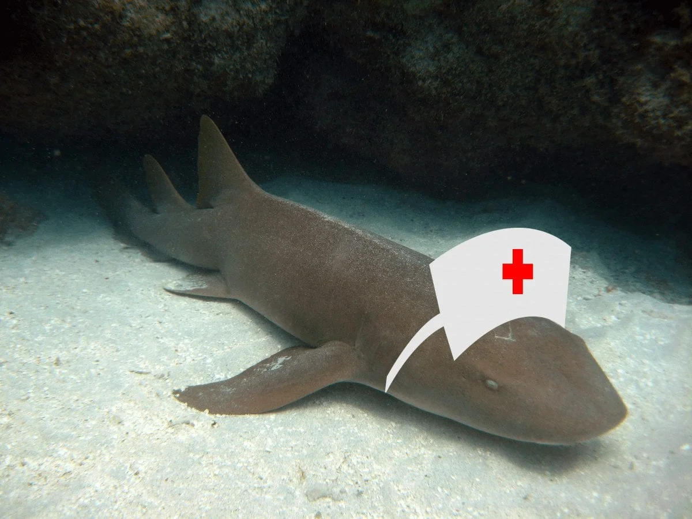

Catalog of my previous works
This is my favorite animal! :)

This is my webring:
Click here to go to my webring
This is also one of my favorite types of sharks!

My reasons for liking sharks:
- They're not the monsters shown in movies. Shark attacks are extremely rare and usually occur due to mistaken identity as their eyesight is very bad.
- Sharks are very important to the ecosystem as they are apex predators and help maintain the balance of the ocean.
- Sharks are very interesting and unique creatures. They have been around for over 400 million years and have adapted to survive in various environments(they tuff like that).
- There are many different species of sharks, each with their own unique characteristics and behaviors.
I have multiple reasons for liking sharks! But I can't list them all here.